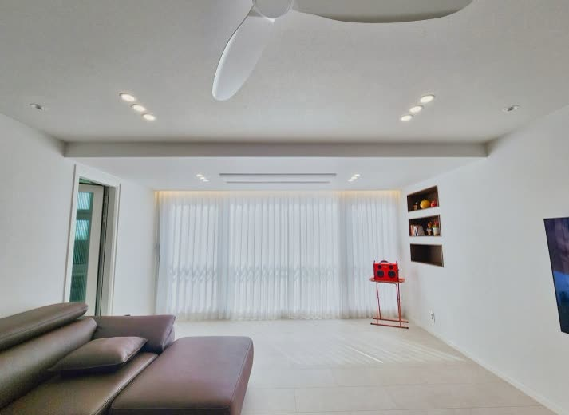
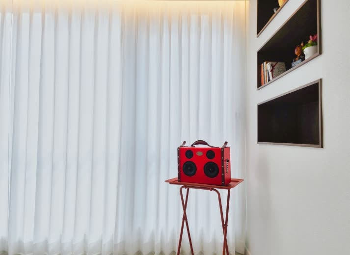

2026년 6월 30일 시공
영주 가흥동 아파트
거실 · 아이방 · 놀이방 커튼 시공후기

집 전체를 한꺼번에 꾸밀 때 가장 어려운 건 방마다 쓰임이 다르다는 점입니다.
거실은 환해야 하고
아이방은 포근해야 하고
놀이방은 빛 조절이 편해야 합니다.
같은 커튼을 전부 똑같이 달면 어느 한 공간은 반드시 아쉬워지기에, 이번 영주 가흥동 아파트는 공간마다 다르게 잡아 드렸습니다.
거실은 가족이 가장 오래 머무는 공간이라 채광을 살리는 게 우선이었습니다.
다만 통창이라 바깥 시선도 신경 쓰이는 자리여서 화이트 헤비쉬폰으로 잡았습니다.
낮에는 빛을 부드럽게 들이면서 바깥 시선은 자연스럽게 가려주고
화이트라 공간이 한층 넓고 환해 보입니다.

이 집은 거실에 우물천장과 커튼박스가 있어 그 라인을 따라 단정하게 시공하는 게 마무리의 핵심이었습니다.
커튼박스 안으로 깔끔하게 넣어 레일이 보이지 않게 정리하니 천장 라인이 더 살아납니다.
이런 디테일이 같은 커튼도 더 고급스럽게 보이게 합니다.


아이방은 분위기를 가장 중요하게 봤습니다.
아이가 지내는 공간이라 차갑지 않고 포근했으면 하셨고
인디언핑크 커튼으로 따뜻한 무드를 냈습니다.
벽지와 어우러지면서 방 전체가 한결 아늑해졌습니다.

놀이방은 시간대에 따라 빛을 자주 조절하는 공간이라 커튼보다 블라인드가 맞았습니다.
백아이보리 콤비블라인드는 원단을 위아래로 살짝 움직이면 채광과 가림을 손쉽게 조절할 수 있어, 낮잠 잘 때도 놀 때도 편합니다.
집 전체를 한 번에 하실 때는 이렇게 공간마다 무엇이 맞는지부터 정하는 게 중요합니다.
비슷한 시공이 필요하신가요?
창 사진 한 장이면 대략 견적을 받아보실 수 있습니다.
부재 시 문자를 남겨주시면 빠르게 답변드립니다.